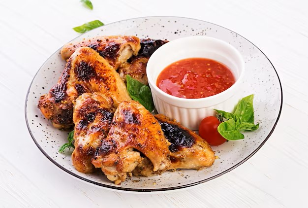
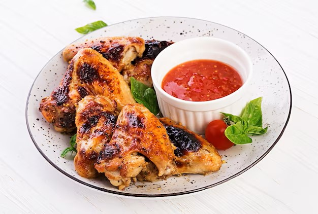

Shudh Restaurent


 


Menu
All Time Favourite
French Fries 106/-
Chilli Cheese Toast 115/-
Chilli Cheese Gralic Toast 115/-
Garlic Bread 98/-
Garlic Bread with Cheese 119/-
Starters
Tandoori Paneer Tikka 220/-
Malai Paneer Tikka 220/-
Soya Tandoori Tikka 175/-
Tandoori Aloo 179/-
Punjabi Soya Chap 179/-
Hare-Bhare Kabab 162/-
Dahi ke Kabab 179/-
Platter 325/-
Rice / Pulao / Biryanis / Raitas
Steam Rice 161/-
Soya Dum Biryani 220/-
Veg. Pulao 161/-
Mix Veg. Pulao 161/-
Jeera Pulao 161/-
Matka Biryani With Raita 220/-
Hyderabadi Biryani 220/-
Plain Raita 102/-
Boondi Raita 102/-
Mix. Veg. Raita 102/-
Jeera Raita 102/-
Pineapple Raita 102/-
Address
Fun Sqaure Mall, Village: Koi Sahib,
Dhun Road, Sangrur
Phone No :+01672-233233
E-mail: info@shudhrestaurant.com